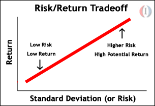

With the markets moving up and down like a Six Flags roller coaster, is there anything you can do to stomach the risk? Have you carefully considered the various risks that are associated with each investment you make?
The fact is, many people either have no desire or no knowledge about how to protect themselves from unneeded risk. In this tutorial, we'll introduce you to risk and give you a good foundation to understand the relationship between return and risk. (For related reading on this topic, see Determining Risk And The Risk Pyramid and The Equity Risk Premium - Part 1 and Part 2.)
Whether it is investing, driving, or just walking down the street, everyone exposes themselves to risk. Your personality and lifestyle play a big role in how much risk you are comfortably able to take on. If you invest in stocks and have trouble sleeping at night, you are probably taking on too much risk. (For more insight, see A Guide To Portfolio Construction.)
Risk is defined as the chance that an investment's actual return will be different than expected. This includes the possibility of losing some or all of the original investment.
Those of us who work hard for every penny we earn have a harder time parting with money. Therefore, people with less disposable income tend to be, by necessity, more risk averse. On the other end of the spectrum, day traders feel if they aren't making dozens of trades a day there is a problem. These people are risk lovers.
When investing in stocks, bonds, or any investment instrument, there is a lot more risk than you'd think. In the next section, we'll take a look at the different kind of risk that often threaten investors' returns.
Let's take a look at the two basic types of risk:
Now that we've determined the fundamental types of risk, let's look at more specific types of risk, particularly when we talk about stocks and bonds.
Interest Rate Risk - Interest rate risk is the risk that an investment's value will change as a result of a change in interest rates. This risk affects the value of bonds more directly than stocks. (To learn more, read How Interest Rates Affect The Stock Market.)
The risk-return tradeoff could easily be called the iron stomach test. Deciding what amount of risk you can take on is one of the most important investment decision you will make.
The risk-return tradeoff is the balance an investor must decide on between the desire for the lowest possible risk for the highest possible returns. Remember to keep in mind that low levels of uncertainty (low risk) are associated with low potential returns and high levels of uncertainty (high risk) are associated with high potential returns.
The risk-free rate of return is usually signified by the quoted yield of "U.S. Government Securities" because the government very rarely defaults on loans. Let's suppose that the risk-free rate is currently 6%. Therefore, for virtually no risk, an investor can earn 6% per year on his or her money. But who wants 6% when index funds are averaging 12-14.5% per year? Remember that index funds don't return 14.5% every year, instead they return -5% one year and 25% the next and so on. In other words, in order to receive this higher return, investors much also take on considerably more risk.
The following chart shows an example of the risk/return tradeoff for investing. A higher standard deviation means a higher risk:
In the next section, we'll show you what you can do to reduce the risk in your portfolio with an introduction to the diversification.
With the stock markets bouncing up and down 5% every week, individual investors clearly need a safety net. Diversification can work this way and can prevent your entire portfolio from losing value.
Diversifying your portfolio may not be the sexiest of investment topics. Still, most investment professionals agree that while it does not guarantee against a loss, diversification is the most important component to helping you reach your long-range financial goals while minimizing your risk. Keep in mind, however that no matter how much diversification you do, it can never reduce risk down to zero. (For related reading, see Introduction To Diversification and The Importance Of Diversification.)
What do you need to have a well diversified portfolio? There are three main things you should do to ensure that you are adequately diversified:
Another question people always ask is how many stocks they should buy to reduce the risk of their portfolio. The portfolio theory tells us that after 10-12 diversified stocks, you are very close to optimal diversification. This doesn't mean buying 12 internet or tech stocks will give you optimal diversification. Instead, you need to buy stocks of different sizes and from various industries.
{kind=link}